Demonstrates concretely why a shared API key handed to an agent is an access-control failure (one incident-triage demo has the agent drop a production billing database using the same key it used elsewhere), then shows the fix using RFC 8...
This traces one talk's before/after: a single shared key that lets an agent act unchecked, versus RFC 8693 token exchange that scopes, denies, and expires each tool call (ours).
“it sees that the solution is pretty clear. It says that the documented recovery is to delete the database and then restore from what the restore from backup happen automatically”
said at 03:09“agents with API keys are indeed outpass 10. They're overprivileged”
said at 04:52“we can't just solve this with human in the loop. We spent decades solving access management for humans”
said at 05:23“RFC8693 is token exchange and this is an RFC that extends OOTH 2”
said at 07:29“this token has an audience declaring that only this target MCP server is allowed to use it to make requests”
said at 11:05“the policy evaluates before the credential is minted, which means you don't have an overprivileged credential that's just floating around”
said at 13:46“It works with OpenClaw and basically anything that might come out next week”
said at 16:23(ours) The strongest single point is that the token is denied before it's minted, not revoked after use, which removes an entire class of after-the-fact leak/replay risk that policy-as-detection approaches can't fully close.
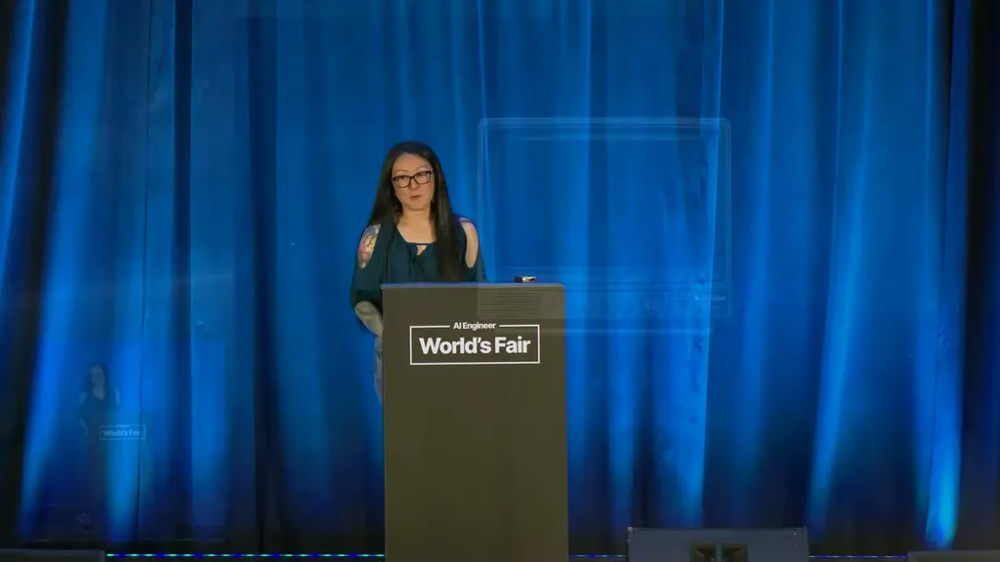
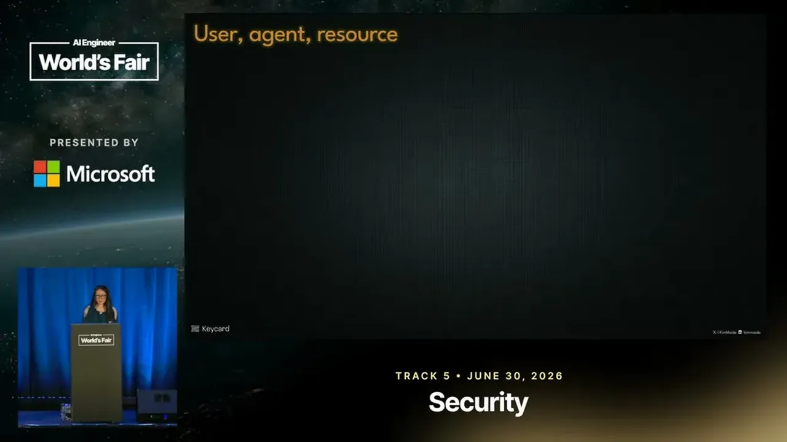
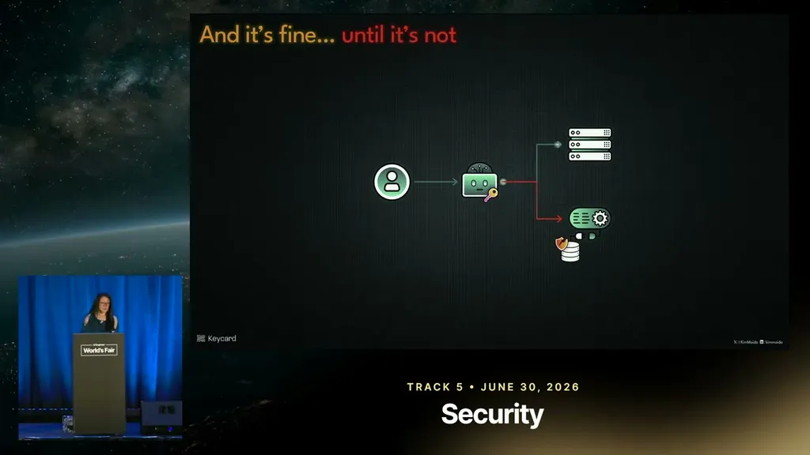
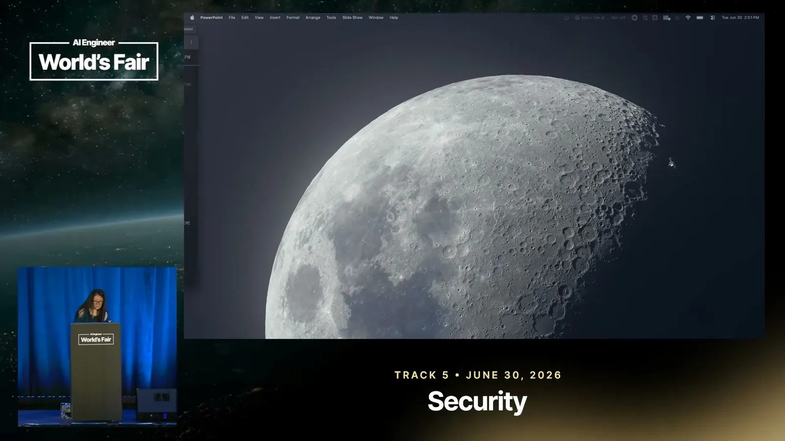
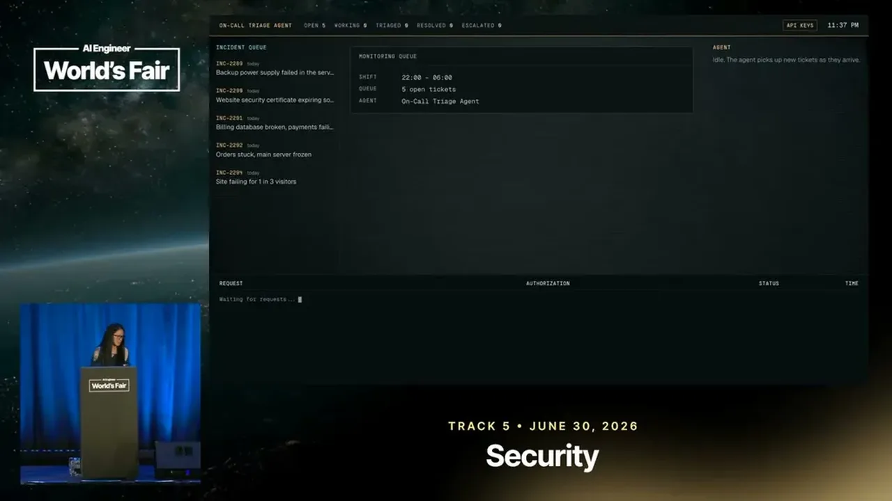
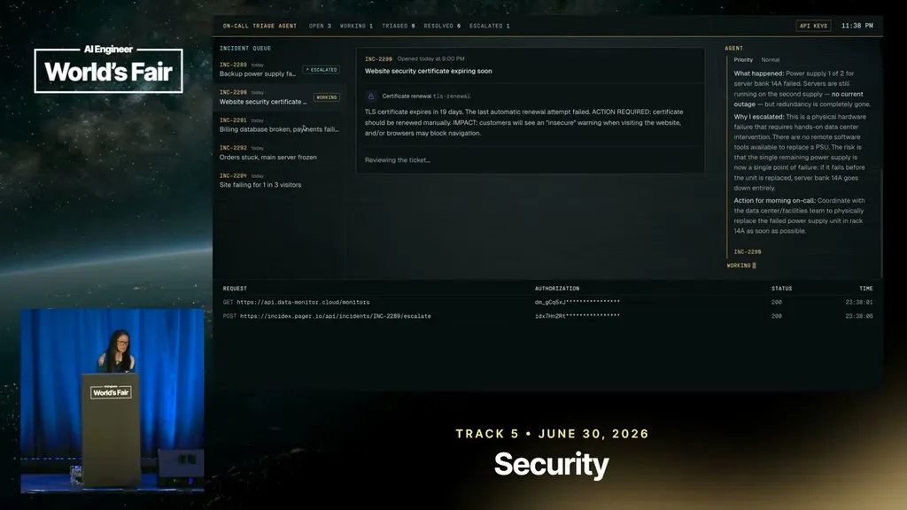
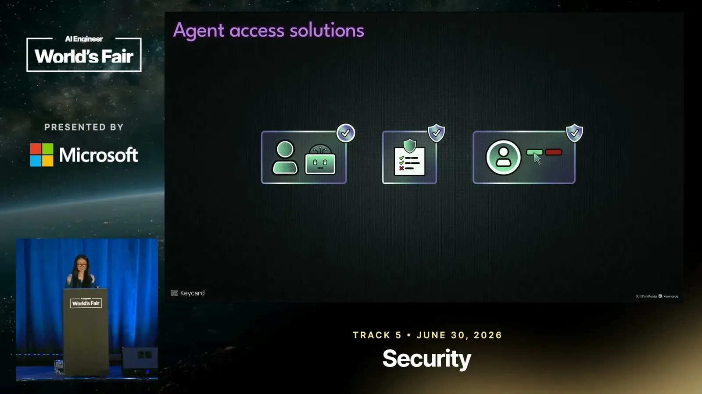
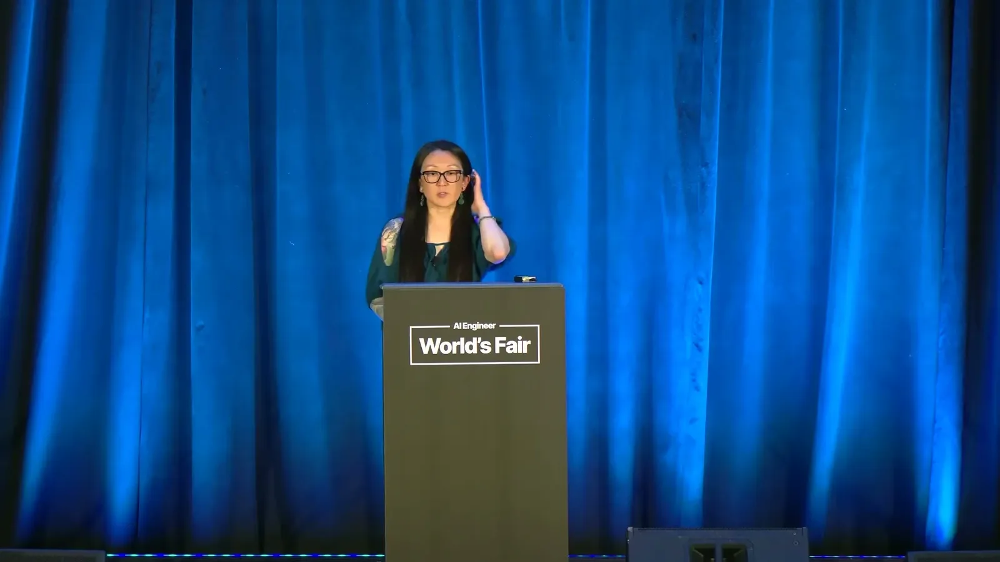
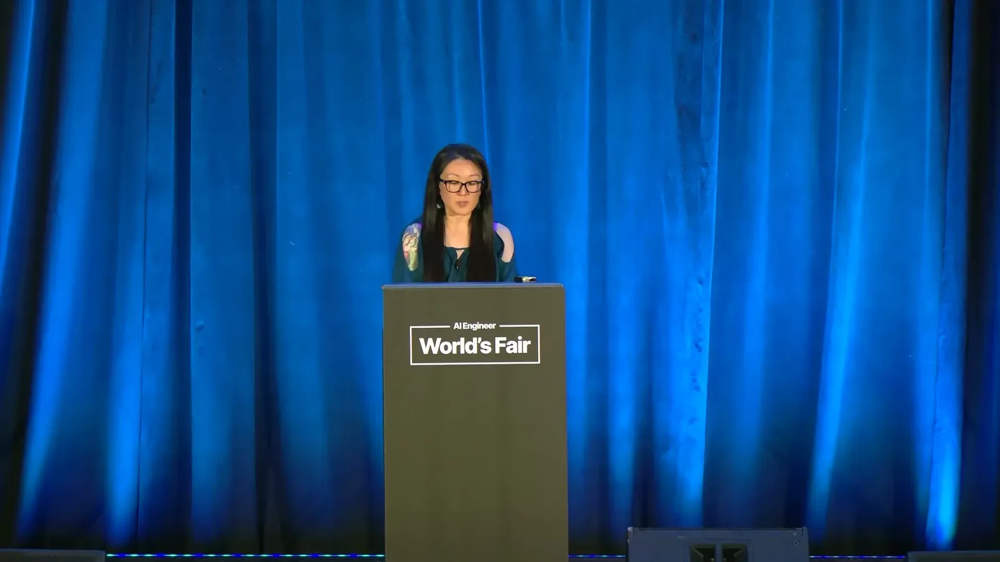
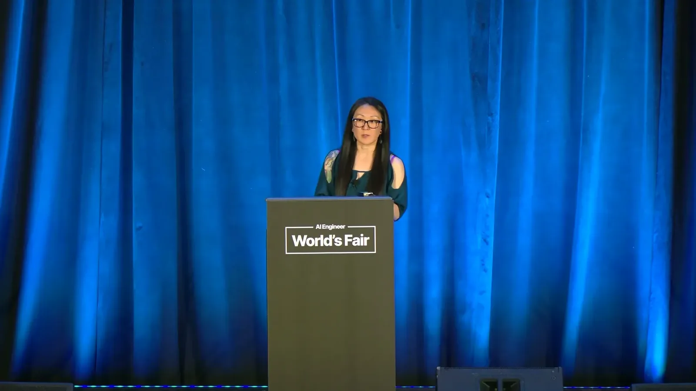
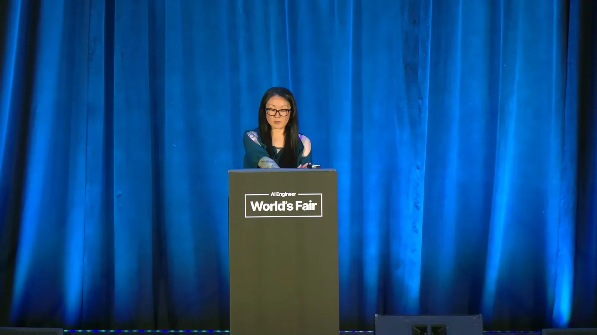
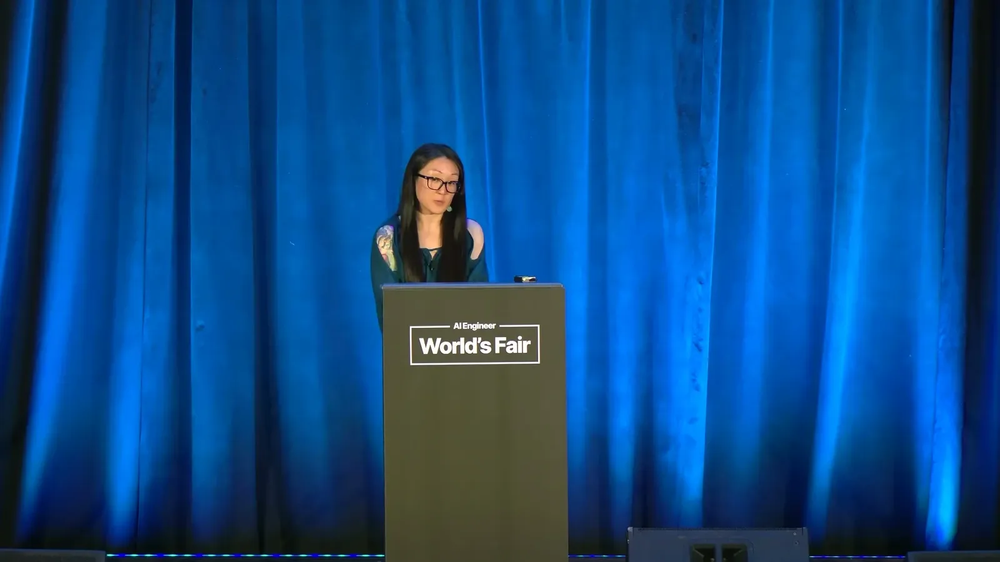
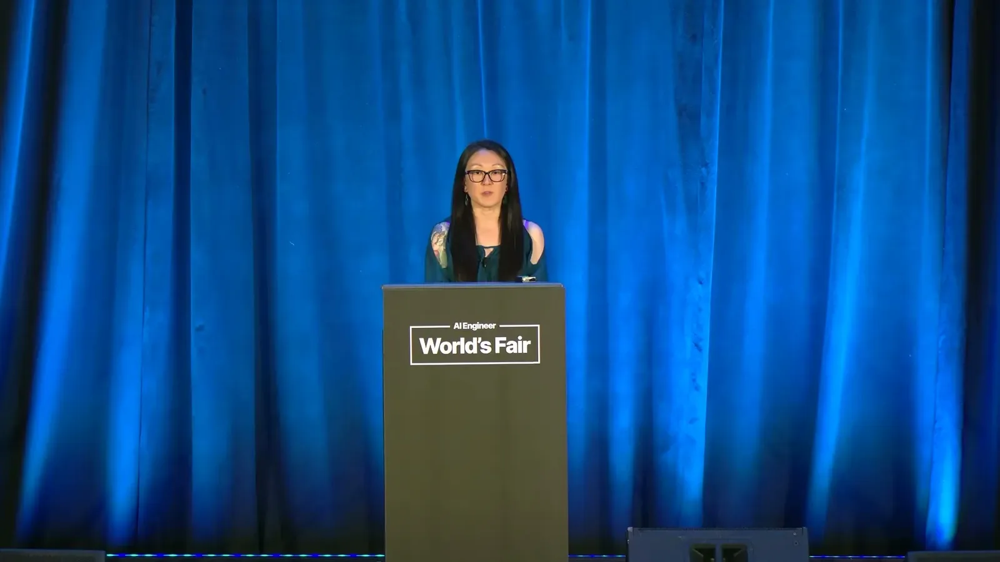
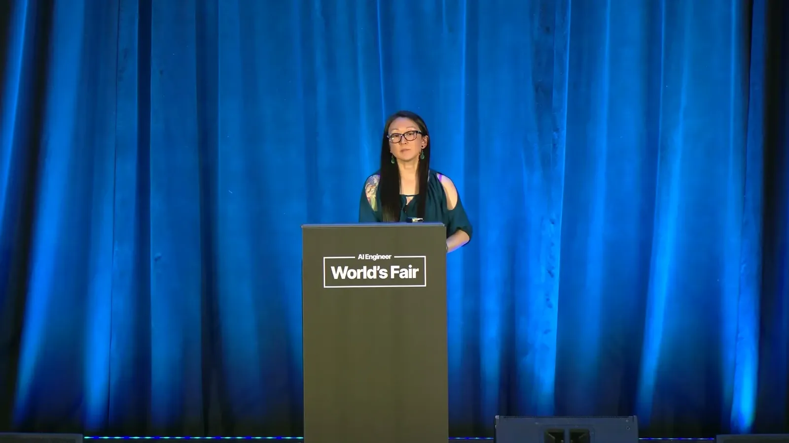
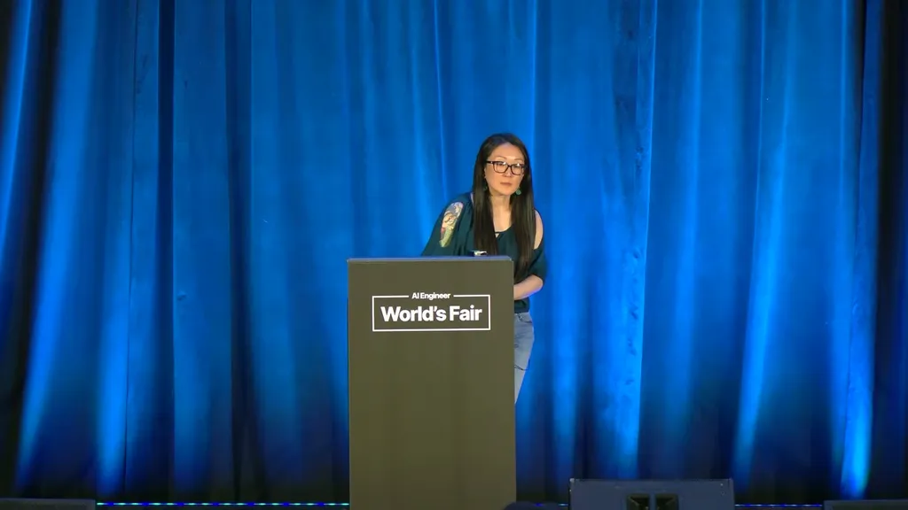
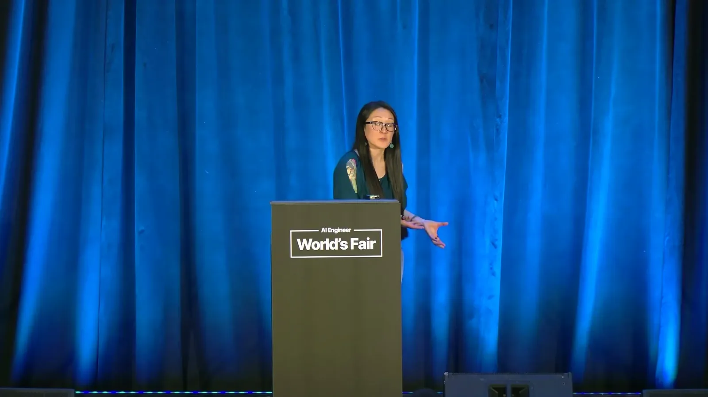
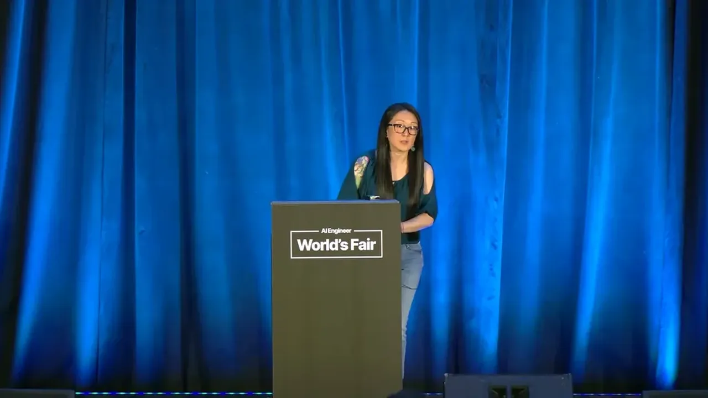
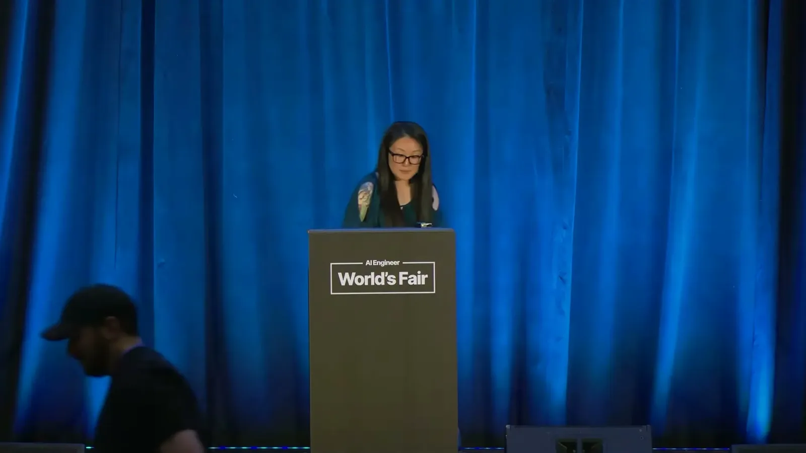
| Stance | Claim | t |
|---|---|---|
| warns | An agent using a shared API key read a ticket documenting that the recovery procedure was to delete the billing database and did so, with no way to check whether a backup existed. | 03:09 |
| warns | Agents given API keys are effectively overprivileged and can act freely on decisions the user may not agree with, even under supervision. | 04:52 |
| recommends | RFC 8693 token exchange, an existing OAuth 2 extension, can be used to implement real access control for agent tool calls without inventing a new protocol. | 07:29 |
| asserts | The exchanged access token declares an audience naming only the specific target MCP server allowed to use it for that tool call. | 11:05 |
| asserts | A disallowed action like dropping a database is blocked by policy before any credential is minted, so no overprivileged credential ever exists to leak. | 13:46 |
| warns | Human-in-the-loop approval alone isn't sufficient for agent access control because humans make mistakes, get consent-fatigued, and many agents run fully unsupervised. | 05:23 |
| asserts | The token-exchange approach works across off-the-shelf agents, custom agents, CLIs, SDKs, MCP servers/gateways, agent-to-agent flows, and any OAuth identity provider. | 16:23 |
Machine-readable copy embedded in this page (script#ontology) and in the corpus ontology.